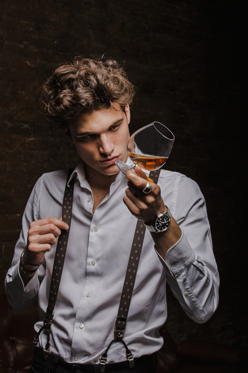

Алкоголь та мікробіота
Алкоголь, який ми вживаємо, частково всмоктується в шлунку, решта його потрапляє далі у кишківник, де не лише всмоктується, але й також взаємодіє з нашою мікробіотою. І тут він частково діє як антибіотик , адже має протимікробну активність. Це викликає порушення мікробної рівноваги та дисбіотичний стан . Частина мікроорганізмів гине, а ті, що виявляються стійкішими, розпочинають бурхливий ріст. Тому вживання алкоголю – один із факторів надмірного бактеріального росту у тонкому кишківнику . При цьому кількість бактероїдів зменшується, а протеобактерій, у тому числі всіляких умовно-патогенних їх представників, зростає.
Окрім безпосередніх ризиків, пов'язаних вирощуванням і селекціонуванням потенційно патогенних штамів у власному кишківнику, надмірний ріст грам-негативної біоти веде до підвищення кількості ліпосахаридів . Зважаючи, що й сам алкоголь та продукти його метаболізму додатково підвищують проникність кишкового бар'єру, така комбінація обставин веде до розвитку стану хронічного запалення та є фактором розвиткуожиріння та діабету другого типу.
Але навіть не тут починається головна "зрада".
Як метаболізується алкоголь?
Частина спожитого етанолу справді метаболізується у печінці до оцтового альдегіду, а вже він розноситься по всьому тілу і переробляється далі на оцтову кислоту. Та підхоплюється циклом Кребса і на виході маємо вуглекислий газ та воду. Ось, як все гарно. Якби не той факт, що практично всі проміжні продукти та і сам алкоголь, здатні взаємодіяти із багатьма важливими біологічними молекулами і не лише просто виводити їх з ладу, а й утворювати при цьому метаболіти із канцерогенними властивостями . Вони можуть порушувати стабільність молекул ДНК, утворювати на ній зшивки, запускати утворення вільних радикалів.
Кишківник один із перших бере на себе удар токсичної дії алкоголю. Там накопичується оцтовий альдегід , ... який із етанолу продукують мікроби , які вижили. Так, не лише наша печінка здатна за допомогою алкогольдегідрогенази переробити етанол на оцтовий альдегід – мікробні ферменти (каталази) також здійснюють ці нехитрі для них забави. Проблема в тому, що наступний етап (перетворення оцтового альдегіду в оцтову кислоту) відбувається дещо повільніше і оцтовий альдегід (а він є канцерогеном), активно накопичується, коли алкоголь продовжує надходити.
Місцева дія таких агресивних сполук – прогнозована: із вживанням алкоголю пов'язаний істотний ризик (зростання на 60%) виникнення колоректального раку . Щоправда, такі цифри релевантні для щоденного вживання алкоголю і були розраховані для "хеві-дрінкерів" , що вживали 50 мл і більше алкоголю щодня. Однак, якщо в родинному анамнезі вже є випадки новоутворень кишківника, навіть 30 мл алкоголю в день істотно підвищуватимуть цю ймовірність. Більше того, "лайтове" споживання алкогольних напоїв раз на тиждень протягом 6 місяців , у тандемі з індексом маси тіла вищим за 30 підвищуватиме шанси отримати колоректальний рак в кілька разів.

Photo by Vincenzo Malagoli on Unsplash